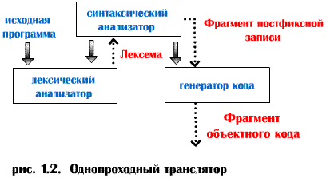

Однопроходный транслятор.

Для
достижения высокой скорости компиляции применяется компилятор с
однопроходной структурой (рис. 1.2). На рисунке связи по управлению показаны
обычными стрелками, передача данных - пунктирными.
В этом случае синтаксический анализатор выступает в роли основной
управляющей программы, вызывая блок сканирования и
генератор кода,
организованные в виде подпрограмм. Синтаксический анализатор постоянно
обращается к блоку сканирования, получая от него лексему за лексемой из
просматриваемой программы, до тех пор, пока не построит новый элемент
постфиксной записи, после чего он обращается к генератору кода, который
создает объектный код для этого фрагмента программы.
Преимущество :
Максимальная эффективность и скорость выполнения, так как программа
рассматривается лишь однажды, количество операций обращения к файлам
минимально (только чтение из исходного и запись в объектный файлы).
Недостатки :
1. Проблемы при организации
переходов вперед. Например, во время обработки предложения
GOTO
метка ;
могут встретиться трудности, так как "метка" еще не встречалась в
тексте программы.
2. Неоптимальность создаваемой
объектной программы. Например, если встречается текст :
A=(B+C) ;
P=(B+C)+(E+M) ;
компилятор мог бы построить более эффективный объектный код,
трансформировав программу следующим образом :
A=(B+C) ;
P=A+(E+M) ;
Однако однопроходный компилятор может утратить часть нужной
информации к тому времени, когда в тексте встретится формула
(E+M).
3. Поскольку
однопроходный компилятор должен полностью размещаться в памяти, его
реализация сопровождается повышенными требованиями к ресурсу памяти, которые
не всегда можно удовлетворить, имея систему с ограниченным объемом памяти.